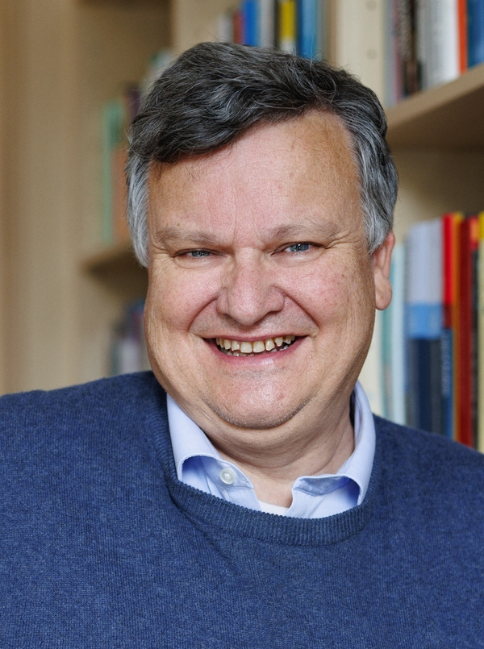

The study of hyperproperties has recently gained a great deal of attention in the formal methods, security, and cyber-physical systems communities. They have become a widely-used formalism for expressing system properties such as information-flow policies, symmetry in hardware design, robustness in cyber-physical systems, as well as properties of learning-enabled systems. The goal of this workshop is to foster the exchange of ideas on the topic of hyperproperties between researchers from these diverse communities and to present and discuss recent advances in formalisms and methods for specifying and analyzing hyperproperties. Topics of interest include, but are not limited to, developments on logical formalisms for specifying hyperproperties, algorithmic methodologies for the verification, synthesis, and runtime verification of hyperproperties, as well as applications related to the fields of cyber-physical systems, security and machine learning.
Invited Speakers

Tom Henzinger
ISTA, Austria
Tom Henzinger is professor at the Institute of Science and Technology Austria (ISTA), chair of the Austrian Council for Sciences, Technology, and Innovation (FORWIT), and member of the Scientific Council of the European Research Council (ERC). He holds a Dipl.-Ing. degree in Computer Science from Johannes Kepler University in Linz, Austria, an M.S. degree in Computer and Information Sciences from the University of Delaware, a Ph.D. degree in Computer Science from Stanford University (1991), and Dr.h.c. degrees from Fourier University in Grenoble, France, and from Masaryk University in Brno, Czech Republic. He was Assistant Professor of Computer Science at Cornell University, Professor of Electrical Engineering and Computer Sciences at the University of California, Berkeley, Director at the Max-Planck Institute for Computer Science in Saarbrucken, Germany, and Professor of Computer and Communication Sciences at EPFL in Lausanne, Switzerland. From 2009 until 2022, he was the founding president of ISTA in Klosterneuburg, Austria. His research focuses on the theory of software systems, especially models, algorithms, and tools for the design and verification of reliable software systems. His HyTech tool was the first model checker for mixed discrete-continuous systems. He is a member of the US National Academy of Sciences, the American Academy of Arts and Sciences, Academia Europaea, the German Academy of Sciences (Leopoldina), and the Austrian Academy of Sciences. He is a Fellow of the AAAS, the ACM, and the IEEE. He received the Robin Milner Award of the Royal Society, the EATCS Award of the European Association for Theoretical Computer Science, the Wittgenstein Award of the Austrian Science Fund (FWF), and two Advanced Grants of the ERC.
Clara Schneidewind
MPI-SP, Germany
Clara Schneidewind is a research group leader at the Max Planck Institute for Security and Privacy (MPI-SP) in Bochum. She obtained her Ph.D. from the Technical University of Vienna in 2021. Since 2022, she has been leading the Heinz Nixdorf research group for Cryptocurrencies and Smart Contracts at MPI-SP. Her main research interests regard solutions for the meaningful, secure, resource-saving, and privacy-preserving usage of blockchain technologies. Those solutions often take the form of interactive decentralized applications or complex cryptographic protocols, whose precise security and privacy needs can only be expressed through hyperproperties. As a result, analyzing such systems requires a broad range of techniques to manage the complexity involved in verifying hyperproperties in this domain.
Emanuele D'Osualdo
University of Konstanz, Germany
Emanuele D'Osualdo is a Tenure-Track Professor of Formal Methods for Software Engineering at the University of Konstanz, Germany. Before joining Konstanz in 2024, he was a Postdoctoral Researcher at MPI-SWS in Derek Dreyer's group and, until 2020, a Marie Curie Fellow at Imperial College London. He earned his BSc and MSc from the University of Udine, Italy, and his PhD from the University of Oxford, where his dissertation received the CPHC/BCS Distinguished Dissertation Award.
Yu Wang
University of Florida, USA
Yu Wang is an Assistant Professor at the Department of Mechanical and Aerospace Engineering at the University of Florida. He was a Postdoctoral Researcher at the Department of Electrical and Computer Engineering at Duke University. He received his Ph.D. in Mechanical Engineering and M.S. in Statistics and Mathematics from the University of Illinois at Urbana-Champaign (UIUC). His research focuses on assured autonomy, cyber-physical systems, machine learning, and formal methods.
Program
8:55 Kick-off
9:00 Session 1
09:00 - 09:45 Invited talk
Emanuele D'Osualdo
Beyond Alignments: Compositional Reasoning for Hyperproperties and Probabilistic Programs
Relational program logics often rely on lockstep proofs, where programs are aligned syntactically and analyzed step by step. While effective when applicable, this rigid strategy can be fragile and limiting. In this talk, I present a more flexible, compositional approach to reasoning about hyperproperties—one that seamlessly integrates unary, relational, and higher-arity proofs. I will first demonstrate this perspective in the setting of hypersafety, showing how compositional proof rules enable reasoning beyond alignments.
Then, I will extend these ideas to probabilistic programs, where unary and relational reasoning are seemingly even more incompatible, and alignment even more rigid. By unlocking the interplay between independence and conditioning (unary concepts) and relational liftings (a relational concept) we uncover new proof principles, leading to a new powerful logic called Bluebell.
09:45 - 10:00 Contributed talk
Thibault Dardinier, Anqi Li, Peter Müller
Hypra: An Automated Deductive Verifier for Hyperproperties
10:00 - 10:15 Contributed talk
Denis Mazzucato, Abdalrhman Mohamed, Juneyoung Lee, Clark Barrett, Jim Grundy, John Harrison, Corina S. Pasareanu
Relational Hoare Logic for Realistically Modelled Machine Code
Many security- and performance-critical domains, such as cryptography, rely on low-level verification to minimize the trusted computing surface and allow code to be written directly in assembly. However, verifying assembly code against a realistic machine model is a challenging task. Furthermore, certain security properties -- such as constant-time behavior -- require relational reasoning that goes beyond traditional correctness by linking multiple execution traces within a single specification. Yet, relational verification has been extensively explored at a higher level of abstraction. In this work, we introduce a Hoare-style logic that provides low-level, expressive relational verification. We demonstrate our approach on the s2n-bignum library, proving both constant-time discipline and equivalence between optimized and verification-friendly routines. Formalized in HOL Light, our results confirm the real-world applicability of relational verification in large assembly codebases.
10:15 - 10:30 Panel Speakers Session 1
Q & A
10:30 Coffee/Tea break
11:00 Session 2
11:00 - 11:45 Invited talk
Clara Schneidewind
Automated Verification of Smart Contract Security Properties
Smart contracts are interactive programs whose execution is enforced by a blockchain-based consensus protocol, usually in the context of a cryptocurrency. Since they often mediate financial transactions, smart contracts are inherently security-critical - and thus compelling targets for formal verification. However, many desirable security guarantees for smart contracts naturally take the form of hyperproperties, making their specification and verification particularly challenging in practice.
In this talk, I will present an overview of our research on efforts to characterize smart contract security and develop tools for their automated verification. I will discuss how a variety of generic security properties — including properties that rule out prominent attack classes such as reentrancy attacks and frontrunning attacks — can be precisely formalized using hyperproperties. Building on this foundation, I will describe our efforts in developing sound and scalable static analysis techniques to verify real-world smart contracts against such properties, aiming for both practical usability and strong formal guarantees.
11:45 - 12:00 Contributed talk
Adwait Godbole, Sanit A. Seshia
SemPat: Lifting Pattern-based Approximations from Security Hyperproperties
12:00 - 12:15 Panel Speakers Session 2
Q & A
12:15 Lunch
14:00 Session 3
14:00 - 14:40 Invited talk
Tom Henzinger
First-Order Thoughts on Hyperproperties
We look at hyperproperties from first principles using explicit quantification over two sorts - traces and time.
Different quantifier orders expose semantic nuances concerning the synchronization of traces (or lack thereof).
Trace quantifiers can be further distinguished to range over the traces of a model, or over the universe of all possible traces.
This distinction allows the construction of unseen witness (or Skolem) traces when monitoring hyperproperties.
14:40 - 15:10 Contributed talk
Cesar Sanchez
(Asynchronous) Temporal Logics for Hyperproperties on Finite Traces
15:10 - 15:25 Contributed talk
Mishel Carelli, Julian Siber, Bernd Finkbeiner
Closure and Complexity of Temporal Causality
15:25 - 15:40 Panel Speakers Session 3
Q & A
15:40 Coffee/Tea break
16:00 Session 4
16:00 - 16:45 Invited talk
Yu Wang
Statistical Model Checking for Probabilistic Hyperproperties
Computing systems, such as cyber-physical systems and randomized programs, often exhibit probabilistic behavior. In these systems, probabilistic hyperproperties commonly arise when analyzing relationships between different system executions. This talk focuses on both the theory and application of probabilistic hyperproperties. We begin by introducing two new classes of probabilistic temporal logics, HyperPCTL* and HyperPSTL, which minimally extend existing probabilistic logics to rigorously express probabilistic hyperproperties. Their syntax and semantics will be discussed in detail. Next, we present HyperSMC, our framework for statistical model checking of probabilistic hyperproperties. HyperSMC enables the verification of whether a system satisfies a given probabilistic hyperproperty with high confidence. We demonstrate the effectiveness of our approach across a range of application domains. Finally, we explore the relationship between probabilistic hyperproperties and the related concept of probabilistic conformance, showing how our approach can also be applied to verify conformance properties.
16:45 - 17:00 Contributed talk
Francesco Pontiggia, Filip Macák, Roman Andriushchenko, Michele Chiari, Milan Češka
Synthesis of Decentralized Plans using Probabilistic Hyperproperties
HypRL: Reinforcement Learning of Control Policies for Hyperproperties
17:15 - 17:30 Contributed talk
Florian Kohn, Bernd Finkbeiner, Martin Fränzle, Paul Kröger
Robust Runtime Monitoring with Slack Variables
17:30 - 17:45 Panel Speakers Session 4
Q & A
17:45 End
Call for Presentations
The HYPER workshop aims to bring together researchers interested in the broad area of hyperproperties and working in the areas of formal methods and control, cybersecurity, and machine learning. HYPER 2025 is co-located with CAV 2025, and will take place in Zagreb, Croatia, on July 21, 2025. Topics of interest include, but are not limited to:
Specification formalisms for hyperproperties
Algorithms for verification, synthesis, and runtime verification for hyperproperties
Information-flow control
Privacy
Fairness
Causality
Robustness
Explainability
Stability
Linearizability
Presentation proposals shall be submitted in form of an extended abstract of up to three pages in LNCS format (not including references) via easychair. Submissions can overlap with previously published work and will be judged based on their relevance to the topic of the workshop. The review process will be single blind and the deadline for submission is May 30, 2025 AoE.